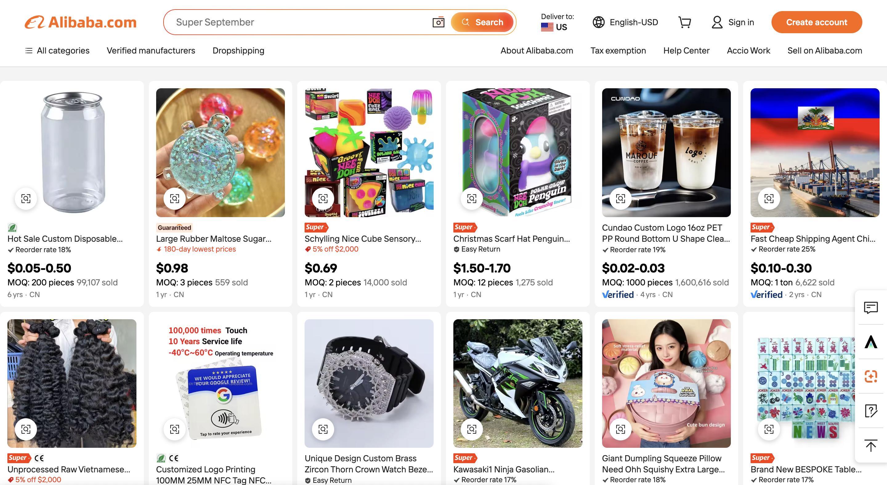

Alibaba
Alibaba.com is a global wholesale marketplace founded by Jack Ma in 1999, followed by the China platform 1688.com for domestic wholesale in the same year. As a pioneer of Chinese e-commerce, Alibaba introduced an integrated payment system (Alipay) to secure transactions between buyers and suppliers on its platform, along with a logistics network through Cainiao. This model helped drive Alibaba’s rapid growth, with Alibaba.com surpassing one million registered users by 2001, while laying the foundation for a digital commerce ecosystem in China.

In 2003, the SARS outbreak accelerated e-commerce growth as consumer habits shifted toward online shopping. In response to changing consumer behavior, Alibaba launched Taobao, a customer-to-customer (C2C) marketplace, and later Tmall, a business-to-customer (B2C) platform for brands and retailers.

Taobao provided a diverse marketplace where consumers could discover products from a wide range of sellers, while Tmall offered a more structured platform for established brands and retailers. Together, these platforms became important components of Alibaba’s ecosystem, making online shopping more accessible to a broader range of consumers and offering greater variety in both sellers and products. This combination of variety and accessibility distinguished Alibaba from other e-commerce platforms and strengthened its position as a leader in China’s e-commerce market.

Its influence extended beyond the platforms themselves when Alibaba launched the 11.11 shopping festival in 2009, transforming online promotions into a major annual shopping event and further shaping consumer shopping habits.